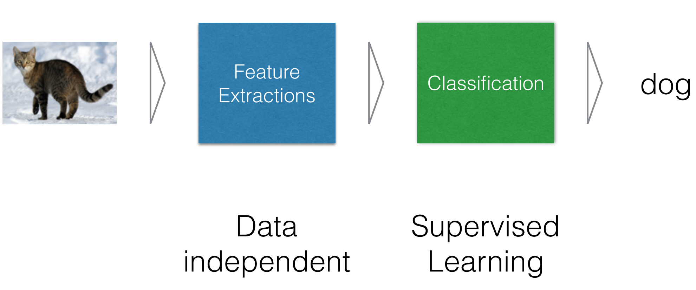
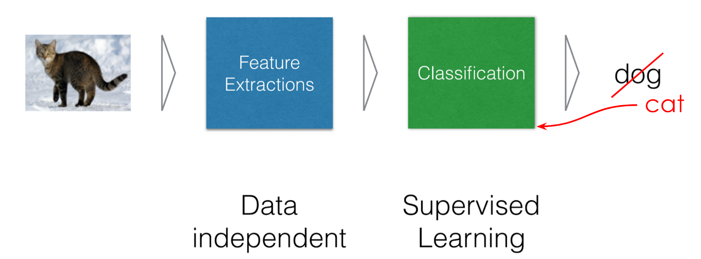
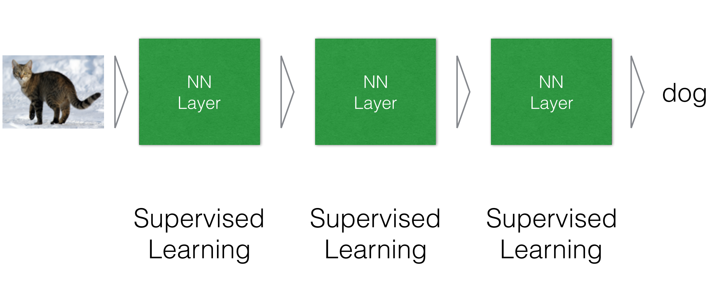

class: center, middle # Introduction to Deep Learning Charles Ollion - Olivier Grisel .affiliations[    ] --- # What is Deep Learning <br/> ### Good old Neural networks, with more layer/modules -- ### Compute hierarchical, abstract representations of data -- ### Flexible models with any input/output type and size --- # Typical ML system <br/></br> .center[  ] --- # Typical ML system <br/></br> .center[  ] --- # Deep Learning system <br/></br> .center[  ] --- # Why Deep Learning Now? - Better algorithms & understanding - Computing power (GPUs) - Data with labels - Open source tools and models -- .center[ <img src="images/ng_data_perf.svg" style="width: 400px;" /><br/><br/> <small>_Adapted from Andrew Ng_</small> ] --- # DL Today: Speech-to-Text .center[ <img src="images/speech.png" style="width: 780px;" /> ] --- # DL Today: Vision .center[ <img src="images/vision.png" style="width: 720px;" /> ] --- # DL Today: Vision .center[ <img src="images/vision2.png" style="width: 720px;" /> ] --- # DL Today: NLP .center[ <img src="images/nlp.png" style="width: 600px;" /> ] --- # DL Today: NLP .center[ <img src="images/nlp2.png" style="width: 720px;" /> ] -- Most of chatbots claiming "AI" do not use Deep Learning (yet?) --- # DL Today: Vision + NLP .center[ <img src="images/nlp_vision.png" style="width: 760px;" /> ] --- # DL Today: Image translation .center[ <img src="images/vision_translation.png" style="width: 700px;" /> ] --- # DL Today: Generative models .center[ <img src="images/nvidia_celeb.jpg" style="width: 350px;" /> <br/>Sampled celebrities [Nvidia 2017] ] <br/> -- .center[ <img src="images/WaveNet.gif" style="width: 400px;" /> <br/>Sound generation with WaveNet [DeepMind 2017] ] --- # DL in other sciences .center[ <img src="images/deep_other.png" style="width: 700px;" /> ] --- # DL for AI in games .center[ <img src="images/games.png" style="width: 650px;" /> ] -- <small> AlphaGo/Zero: Monte Carlo Tree Search, Deep Reinforcement Learning, self-play </small> --- # Goal of the class ## Overview - When and where to use DL - "How" it works - Frontiers of DL -- ## Arcanes of DL - Implement using `Numpy`, `TensorFlow` and `Keras` - Engineering knowledge for building and training DL --- # Outline of the class ### Backpropagation -- ### Computer Vision (1 & 2) -- ### Recommender Systems -- ### Natural Language Processing (1 & 2) -- ### Optimization: theory, methods and tricks -- ### Generative models and unsupervised learning --- # How this unit works ### Lecture 1h-1h30 ### Coding sessions 2h-2h30 - 5 min multiple choice evaluation of previous lab - split into 2 groups - BYO laptop, work by pairs - Homework 3h per week -- ### Final exam 2h -- Recommended reading: [deeplearningbook.org](http://www.deeplearningbook.org/) Francois Chollet's Deep learning book --- ## Libraries & Frameworks - Automatic differentiation - **TensorFlow** - MXnet - CNTK - (Theano) -- - Higher level - **Keras** - Lasagne -- - Dynamic and high level - Torch & ** PyTorch ** - Chainer - MinPy ... --- class: middle, center # Lab 1: Room C48-C49 in 15min!